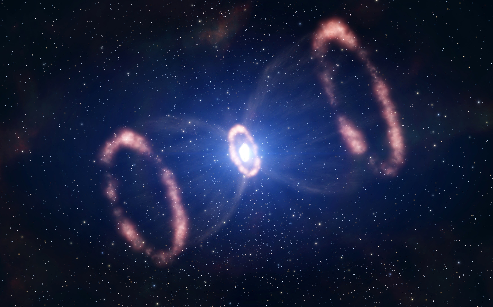

Orion Nebula (M42)

One of the brightest nebulae, visible with the naked eye. A massive star-forming region about 1,300 light-years away.
Meet some spectacular cosmic clouds where stars are born and die.
One of the brightest nebulae, visible with the naked eye. A massive star-forming region about 1,300 light-years away.

Home to the famous “Pillars of Creation,” where new stars are forming within towering columns of gas and dust.

The remnant of a supernova recorded in 1054 CE. Contains a rapidly spinning neutron star (pulsar) at its center.

A planetary nebula — the glowing shell of gas ejected by a dying star — appearing as a bright ring in Lyra.

A colossal southern-sky nebula with dramatic pillars and massive stars like Eta Carinae shaping its structure.
Binoculars reveal nebulosity under dark skies. Filters (UHC/OIII) help enhance contrast in telescopes for emission nebulae.